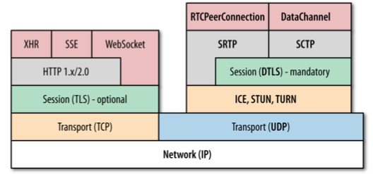
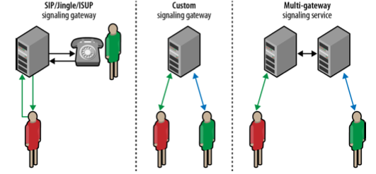

Definición
Web Real-Time Communication (WebRTC) es una colección de estandares, protocolos y APIs de JavaScript, la combinación de las cuales habilita la posibilidad de compartir Audio, Video y Datos entre navegadores (peers).
Definición
Toda esta complexidad esta abstraida en las siguientes APIs del navegador (Firefox o Chrome):
- MediaStream: Captura el audio y video stream.
- RTCPeerConnection: Comunicación de Audio y Video.
- TRCDataChannel: Comunicación de Datos.
Mantenimiento y Desarrollo
El equipo encargado de mantener y desarrollar WebRTC es:
- Web Real-Time COmmunications (WEBRTC): W3C responsables de definir las APIs del navegador.
- Real-Time Communication in Web-browsers (RTCWEB): Responsables de definir los protocolos, seguridad, formato de datos (etc).
Audio y Video
El Audio i Video recogido por el getUserMedia se tiene que 'tratar' para poder ser enviado, WebRTC se encara de codificar al enviar y al recibir el Audio o Video.
Protocolos
- ICE: Interactive Connectivity Establishment (RFC 5245)
- STUN: Session Traversal Utilities for NAT (RFC 5389)
- TURN: Traversal Using Relays around NAT (RFC 5766)
- SDP: Session Description Protocol (RFC 4566)
- DTLS: Datagram Transport Layer Security (RFC 6347)
- SCTP: Stream Control Transport Protocol (RFC 4960)
- SRTP: Secure Real-Time Transport Protocol (RFC 3711)
Protocolos

- ICE, STUN and TURN: Necesarios para establecer y mantener la comunicación UDP Peer-Peer.
- DTLS: Asegura toda la información entre Peers
- SCTP y SRTP: Encargados de controlar el flujo, las congestiones, multiplexar 'streams' ...
RTCPeerConnection API
Todos los Protocolos que hemos explicado antes los incorpora WebRTC con la API de RTCPeerConnection que es la encargada de mantener el ciclo de vida de cada 'peer'
Iniciar una conexion Peer-to-Peer
Esta parte no la define WebRTC, es de libre elección a la aplicación. La funcionalidad es la de saber e informar que las dos 'Peers' estan preparadas para recibir/enviar audio y video. Seria el hecho de 'Llamar', Signaling and Session Negotiation.
Las posibilidades que recomiendan son:
- SIP/Jingle/ISUP: Signaling gateway
- Custom: Signaling gateway
- Multi-Gateway: Signaling Service
Iniciar una conexion Peer-to-Peer

Interactive Connection Establishment (ICE)
Responsable de:
- Cada RTCPeerConnections contiene un "ICE agent"
- "ICE agent" es responsable de obtener la IP local, puertos (candidatos)
- "ICE agent" es responsable de checkear la conectividad entre Peers
- "ICE agent" es responsable de enviar 'keepalives' (si el Peer esta vivo)
Interactive Connection Establishment (ICE)
Una vez establecidas las SD locales o remotas el ICE agent empieza a:
- Pide al sistema la IP
- Pide als STUN su IP publica con puertos.
Interactive Connection Establishment (ICE)
Una vez se tiene la SD local y remota el ICE agent empieza a intentar conectarse al otro Peer (tiene una lista de Candidatos) enviando mensages al otro Peer esperando un ACK de respuesta OK!.
THE END
BY Francesc Gil
This slides are powered by reveal.js